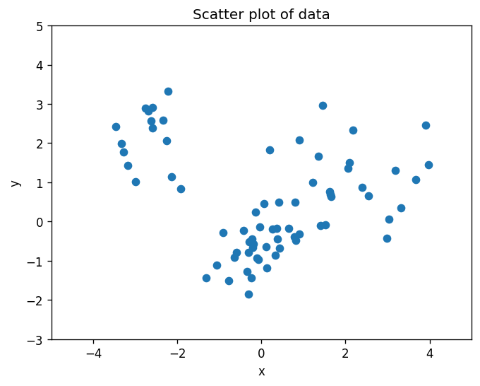
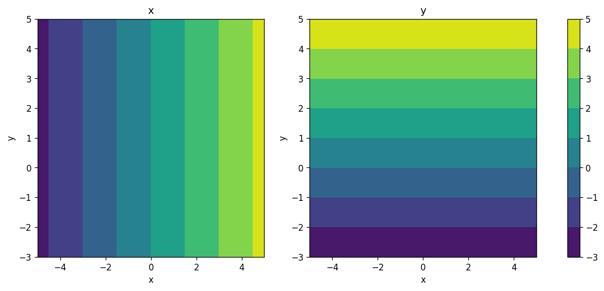
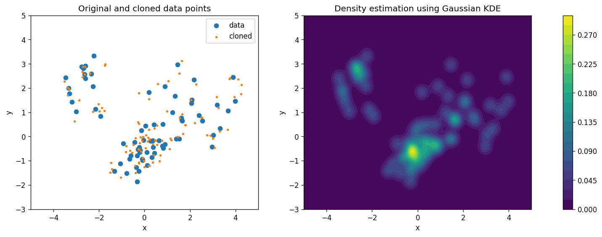
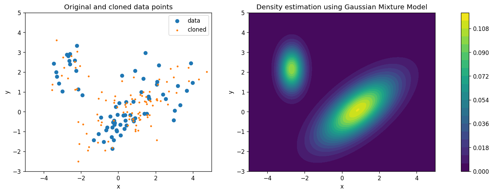
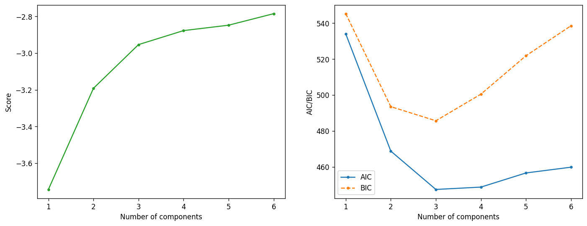
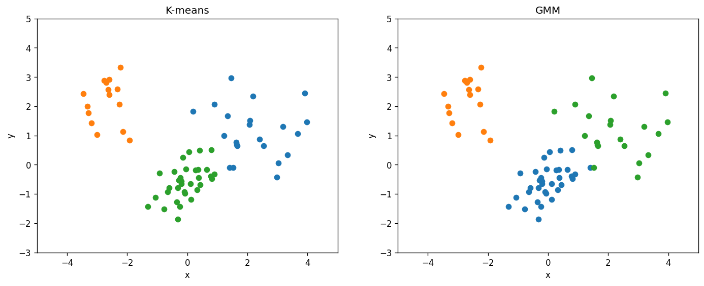

Lab 17: Density Estimation and Clustering#
For the class on Monday, April 7th
A. Kernel Density Estimation (KDE) and Gaussian Mixture Model (GMM)#
We will use both the Kernel Density Estimation (KDE) and the Gaussian Mixture Model (GMM) to estimate the density distribution of a mock data set with two features.
The code also serves as an example of how to make a contour plot in Python.
import numpy as np
import pandas as pd
import matplotlib.pyplot as plt
d = pd.read_csv("https://yymao.github.io/phys7730/spring2024/data/lab17.csv")
xlim = (-5, 5)
ylim = (-3, 5)
fig, ax = plt.subplots(dpi=120)
ax.scatter(d.x, d.y)
ax.set_title("Scatter plot of data")
ax.set_xlim(*xlim)
ax.set_ylim(*ylim)
ax.set_xlabel("x")
ax.set_ylabel("y");

# In this cell, we are creating a 2D grid of points in the x-y plane that we can use to make the contour plot.
# The function `np.meshgrid` takes two 1D arrays and returns two 2D arrays that represent the grid of points in the x-y plane.
# Note that the resulting variable `x` is a 2D array that stores the value of x coordinate in the 2D space!
x, y = np.meshgrid(np.linspace(*xlim, num=501), np.linspace(*ylim, num=501))
print(x.shape)
fig, ax = plt.subplots(ncols=2, figsize=(13,5), dpi=120)
cs = ax[0].contourf(x, y, x)
cs = ax[1].contourf(x, y, y)
ax[0].set_title("x")
ax[1].set_title("y")
ax[0].set_xlabel("x")
ax[1].set_xlabel("x")
ax[0].set_ylabel("y")
ax[1].set_ylabel("y")
plt.colorbar(cs, ax=ax);
(501, 501)

# Here we are using Gaussian KDE to estimate the density
from sklearn.neighbors import KernelDensity
kde = KernelDensity(kernel='gaussian', bandwidth=0.2)
kde.fit(d)
fig, ax = plt.subplots(ncols=2, figsize=(16,5), dpi=120)
ax[0].scatter(d.x, d.y, label="data")
ax[0].scatter(*kde.sample(100).T, s=5, label="cloned")
ax[0].legend()
cs = ax[1].contourf(x, y, np.exp(kde.score_samples(np.stack([x.ravel(), y.ravel()]).T).reshape(x.shape)), levels=20)
plt.colorbar(cs, ax=ax)
for ax_this in ax:
ax_this.set_xlim(*xlim)
ax_this.set_ylim(*ylim)
ax_this.set_xlabel("x")
ax_this.set_ylabel("y")
ax[0].set_title("Original and cloned data points")
ax[1].set_title("Density estimation using Gaussian KDE");
/home/runner/work/phys7730/phys7730/.venv/lib/python3.13/site-packages/sklearn/utils/validation.py:2739: UserWarning: X does not have valid feature names, but KernelDensity was fitted with feature names
warnings.warn(

# Here we are using the Gaussian Mixture Model to estimate the density
from sklearn.mixture import GaussianMixture
gmm = GaussianMixture(n_components=2)
gmm.fit(d)
fig, ax = plt.subplots(ncols=2, figsize=(16,5), dpi=120)
ax[0].scatter(d.x, d.y, label="data")
ax[0].scatter(*gmm.sample(100)[0].T, s=5, label="cloned") # note the slightly different return behavior of .sample()
ax[0].legend()
cs = ax[1].contourf(x, y, np.exp(gmm.score_samples(np.stack([x.ravel(), y.ravel()]).T).reshape(x.shape)), levels=20)
plt.colorbar(cs, ax=ax)
for ax_this in ax:
ax_this.set_xlim(*xlim)
ax_this.set_ylim(*ylim)
ax_this.set_xlabel("x")
ax_this.set_ylabel("y")
ax[0].set_title("Original and cloned data points")
ax[1].set_title("Density estimation using Gaussian Mixture Model");
/home/runner/work/phys7730/phys7730/.venv/lib/python3.13/site-packages/sklearn/utils/validation.py:2739: UserWarning: X does not have valid feature names, but GaussianMixture was fitted with feature names
warnings.warn(

# Here we are evaluating the performance of the GMM when we change the number of components using AIC and BIC.
n_range = list(range(1, 7))
scores = []
aic = []
bic = []
for n_components in n_range:
gmm = GaussianMixture(n_components=n_components)
gmm.fit(d)
scores.append(gmm.score(d))
aic.append(gmm.aic(d))
bic.append(gmm.bic(d))
fig, ax = plt.subplots(ncols=2, figsize=(14,5), dpi=120)
ax[0].plot(n_range, scores, marker=".", c="C2")
ax[0].set_xlabel("Number of components")
ax[0].set_ylabel("Score")
ax[1].plot(n_range, aic, label="AIC", marker=".")
ax[1].plot(n_range, bic, label="BIC", marker=".", ls="--")
ax[1].set_xlabel("Number of components")
ax[1].set_ylabel("AIC/BIC")
ax[1].legend();

🚀📝 Tasks and Questions (Part A, Q1-Q4):
What are those orange points (cloned data)? (Hint: check out the
.sample()method’s documentation)Compare the estimated density distributions from the KDE and GMM methods. How do they differ?
After you answer (2), adjust the
bandwidthparameter for KDE (originally set to 0.2) and then_componentsparameter for GMM (originally set to 2) until you think both methods are giving a good fit.After your adjustment in (3), compare again the estimated density distributions from the KDE and GMM methods. How do they differ now?
Based on the last set of plots above, what would be the best number of components to use for GMM?
How did you get your answer here? Does your answer agree with what you found in Q3?
Write your answers to Part A here
B. Clustering (K-means and GMM)#
Here we compare the K-means and GMM clustering methods on the same data set.
from sklearn.cluster import KMeans
from sklearn.metrics import silhouette_score
n_clusters = 3 # TODO: change this when you answer Q3 below
clu = KMeans(n_clusters=n_clusters)
clu.fit(d)
cluster_labels = clu.predict(d)
print("Kmeans Silhouette", silhouette_score(d, cluster_labels))
gmm = GaussianMixture(n_components=n_clusters)
gmm.fit(d)
gmm_labels = gmm.predict(d)
print("GMM Silhouette", silhouette_score(d, gmm_labels))
Kmeans Silhouette 0.5775226398780611
GMM Silhouette 0.5800026592301482
fig, ax = plt.subplots(ncols=2, figsize=(14,5), dpi=120)
for i in range(n_clusters):
mask = (cluster_labels == i)
ax[0].scatter(d.x[mask], d.y[mask])
mask = (gmm_labels == i)
ax[1].scatter(d.x[mask], d.y[mask])
ax[0].set_title("K-means")
ax[1].set_title("GMM")
for ax_this in ax:
ax_this.set_xlim(*xlim)
ax_this.set_ylim(*ylim)
ax_this.set_xlabel("x")
ax_this.set_ylabel("y")

🚀📝 Tasks and Questions (Part B; optional):
For this data set, would you say the K-means and GMM methods give you consistent clustering results?
Rerun these two cells a few times. Does each run give you the same result, or are there any differences?
In the first cell of Part B, change to
n_clusters = 4and rerun the two cells a few times. Do K-means and GMM methods give you consistent clustering result every time you run them? Briefly (2-3 sentences) explain what you observe.
Write your answers for Part A here (optional)
If you write your answers in this notebook, please submit it following the usual instructions. You can also directly submit your answers on Canvas, either as plain text or a PDF file.
Tip
Submit your notebook
Follow these steps when you complete this lab and are ready to submit your work to Canvas:
Check that all your text answers, plots, and code are all properly displayed in this notebook.
Run the cell below.
Download the resulting HTML file
17.htmland then upload it to the corresponding assignment on Canvas.
!jupyter nbconvert --to html --embed-images 17.ipynb